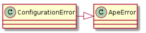

This is the place for errors that are raised by code in this package. In order to make it easier for the Operator to catch (somewhat) predictable errors all the errors raised by parts, components and plugins should be sub-classes of the ApeError and be kept in this module.

| ConfigurationError |
| DontCatchError |
If this exception is trapped, it should never be caught by any of the composites, since ApeError level Exceptions and above are what need to be caught.